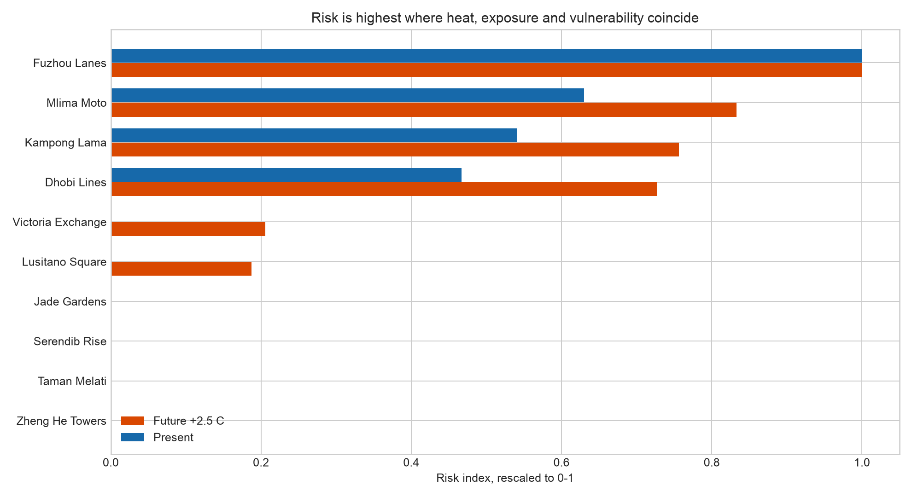
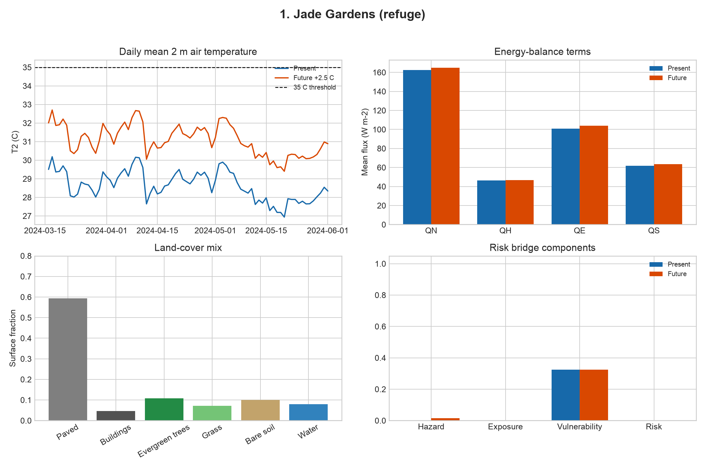

Baseline
Present to future heat risk
The future scenario applies the supplied +2.5 C pseudo-warming. Bars show annual dangerous-heat hours after the 14-day spin-up.

Experiments
Intervention response
Negative deltas reduce dangerous-heat hours. Positive deltas increase them. The albedo baseline was 0.20 for paved and building surfaces.
| Experiment | Group | Parameter | Baseline mean | Scenario mean | Mean delta | Range |
|---|
Neighbourhoods
Site-level experiment detail
-
-
- Present heat hours
- -
- Future heat hours
- -
- Future T2 mean
- -
- QH / QE
- -

| Experiment | Baseline hours | Scenario hours | Delta hours | Risk change |
|---|
Interpretation
What the experiments suggest
Radiative changes dominate this metric
Paved albedo is the clearest beneficial single-factor test, reducing dangerous-heat hours across every neighbourhood.
Trees need a better scenario
The tree-fraction tests increase the dry-bulb air-temperature threshold metric. That is a warning about the narrow parameter edit, not evidence against urban trees.
Hydrology-only tests are nearly neutral
Water fraction is slightly beneficial, while evergreen irrigation and vegetation soil-storage changes do not move the threshold-hour count in this setup.